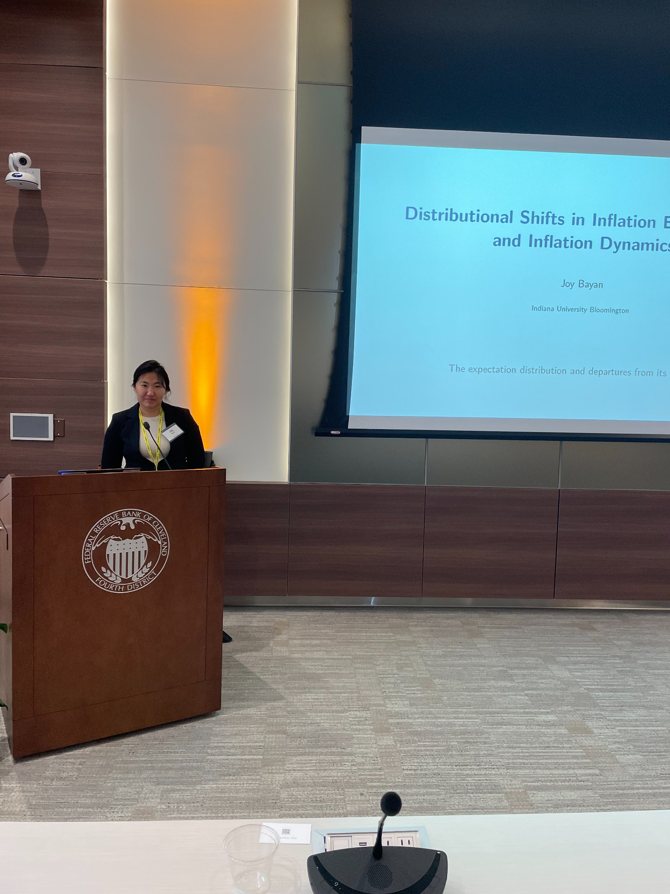

When the Poor Pay More for Groceries: Online Retail Transformation and Monetary Policy
Using 100 million grocery transactions, we find that low-income households faced 1.4% more grocery price inflation than high-income households after COVID.
The Distribution of Inflation Expectations and the Aggregate Phillips Curve
Using individual responses from the University of Michigan Survey of Consumers (1990–2025), I test whether the mean inflation expectation is enough to explain inflation dynamics. Accounting for dispersion and tail risk produces a steeper aggregate Phillips Curve, while the mean expectation becomes insignificant. Changes in the distribution follow different paths during the Great Recession and COVID, showing that it contains information beyond its mean.
The representative-agent New Keynesian Phillips Curve summarizes inflation expectations by their mean, reducing the cross-sectional distribution of beliefs to a single point forecast. This paper examines whether the mean is a sufficient statistic for inflation dynamics. Using individual responses from the University of Michigan Survey of Consumers from 1990 to 2025, I compare the mean expectation with distributional features summarized by dispersion, directional shifts, and tail risk. Accounting for omitted distributional features—particularly dispersion and tail risk in the full sample—produces a steeper aggregate Phillips Curve while the mean expectation becomes insignificant. During COVID, changes in the distribution begin in the tails before developing into a rightward shift, whereas during the Great Recession a leftward shift occurs before the lower tail expands. Hence, the distribution contains information beyond its mean.
Using 100 million grocery transactions, we find that low-income households faced 1.4% more grocery price inflation than high-income households after COVID.
I use regional data to examine how greater trade exposure contributed to the flattening of the U.S. Phillips Curve after 2000.
Federal Reserve Bank of Philadelphia Research Seminar · Federal Reserve Bank of Cleveland RISE Conference · Midwest Economic Association
Illinois Economic Association (October) · Southern Economic Association (November) · Midwest Macroeconomics Conference (November)
American Economic Association, “Inflation and Expectations” session chair · Insurance Risk Economic Series
Federal Reserve Bank of Philadelphia
Ph.D. Research Intern · 2026–present
Federal Reserve Bank of San Francisco
Ph.D. Research Intern · Summer 2024
Indiana University
Research Assistant · 2022–2024
Minnesota Department of Health · Senior Research Analyst (2020–2021)
Minnesota Department of Revenue · Management Analyst (2017–2019)
Minnesota State Demographic Center · Research Analyst (2017–2018)
IU Economics Accessibility Coordinator (2025–2026) · IU Graduate Student Government Development Coordinator (2023–2024)
Fundamentals of Macroeconomics for Business
Indiana University · Fall 2024 · 60 students
Indiana University · 2021–2025
Introductory Statistics (Honors), Psychology Statistics, Gender Economics, Economics of Race, and Fundamentals of Macroeconomics for Business.
